🥛
Stewed fresh milk
Farm milk slow-stewed into creamy "hua nom", served hot, iced or bottled to take home.
Fresh Milk Comes From Cows · Khon Kaen
มาร์เตอร์ คาวส์ · นมสดๆ จากฟาร์ม ตุ๋นจนเข้มข้น
Farm-fresh milk, slow-stewed until it's rich and creamy. Fresh-baked bread with our own condensed milk and dips, milk slushies and homemade ice cream, served until midnight in the middle of town.
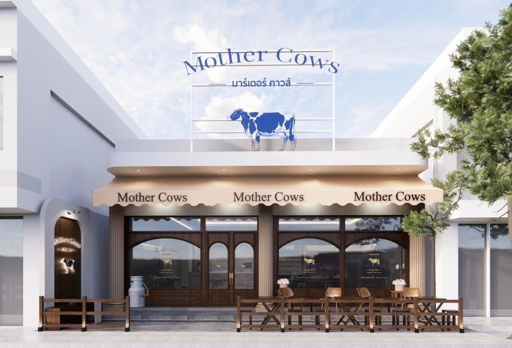
Our story · เรื่องของแม่วัว
Mother Cows began in Hat Yai as a little milk bar with a big following. In February 2025 we opened our Khon Kaen home on Na Mueang Road, behind Khon Kaen Wittayayon School, bringing the same farm-fresh milk and fresh-baked bread to the northeast.
Our signature is "hua nom": fresh milk gently stewed until it turns rich, smooth and full of flavour. Enjoy it hot or cold, blended into a slushy, or drizzled over warm toast.
“นมสดๆ จากฟาร์ม ตุ๋นจนเข้มข้น เป็น ‘หัวนม’
ขนมปังอบสด นมข้นทำเอง สเลอปี้ & ไอติม”
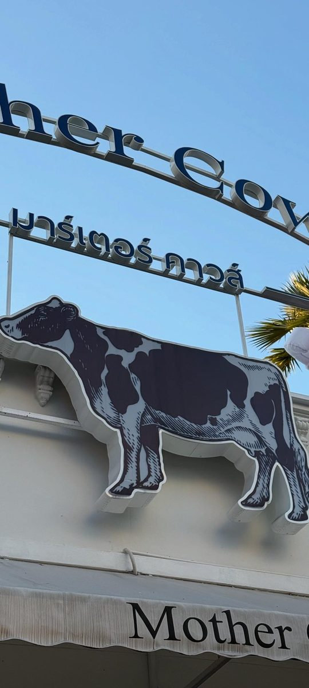
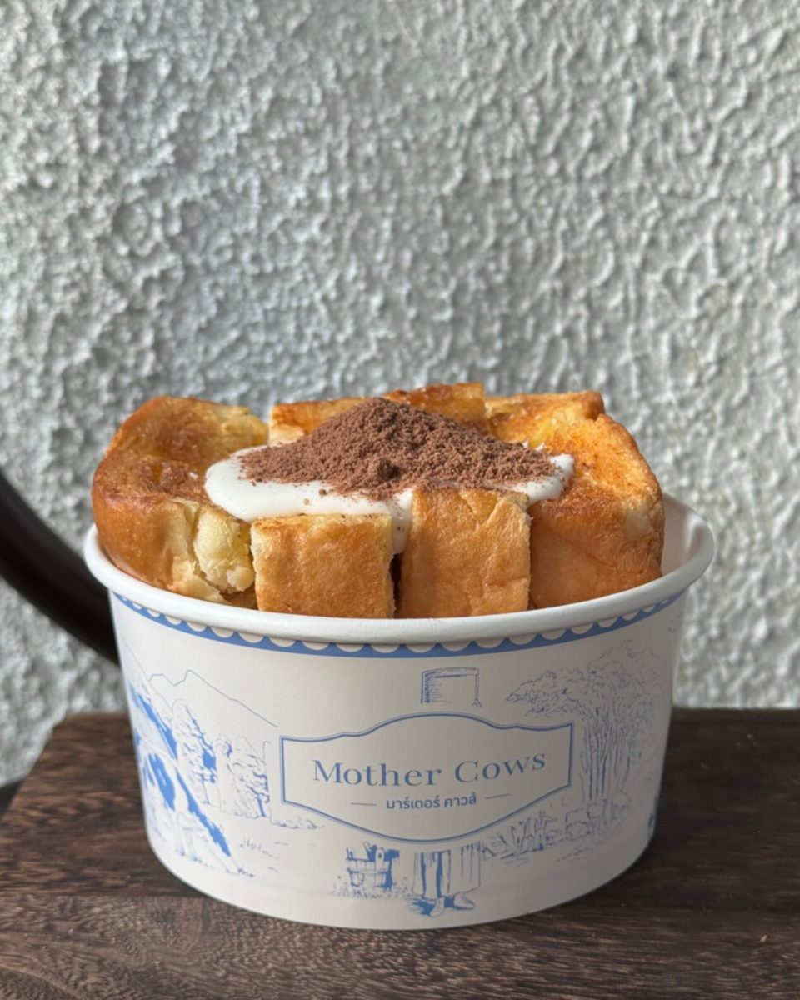
What we're about
Farm milk slow-stewed into creamy "hua nom", served hot, iced or bottled to take home.
Soft toast and steamed bread with homemade condensed milk, custard and our own dips.
Cold, creamy milk slushies and homemade ice cream, including a seriously rich chocolate.
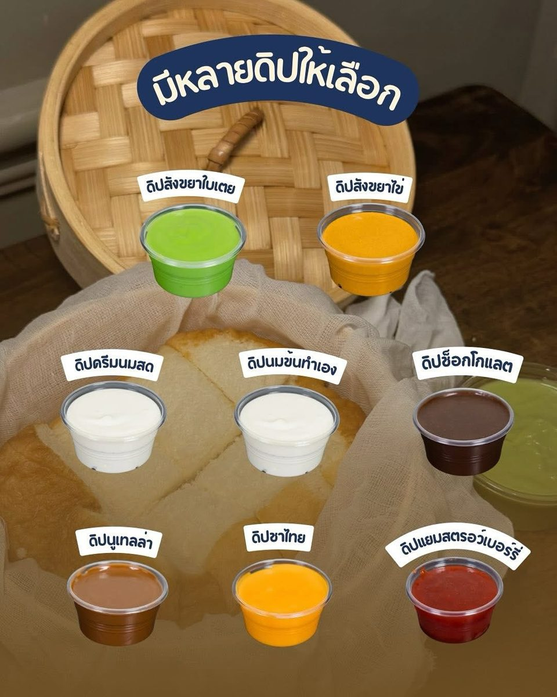
Dip it your way · มีหลายดิปให้เลือก
Our steamed bread comes warm and pillowy, ready for dipping. Choose sweet custard (sangkhaya), fresh milk cream, Thai tea, chocolate, matcha and more, all made in our kitchen.
Craving it at home? Search "Mother Cows ขอนแก่น" on GrabFood and we'll bring it to your door.
What guests say
“นมตุ๋นออริจินอลร้อน… นมหอมมาก รสชาติมันๆ นัวๆ ดื่มง่าย อุ่นๆ กำลังดี”Wongnai review
“ร้านเปิดยาวถึงเที่ยงคืน ใครหาของหวานหรือเครื่องดื่มอุ่นๆ ตอนกลางคืน แวะมาได้เลยครับ”Wongnai review
“ร้านแต่งสวย มีที่นั่ง Indoor และ Outdoor ชาไทยหอม นมสดหอมมัน อร่อยดี”Wongnai review
Gallery
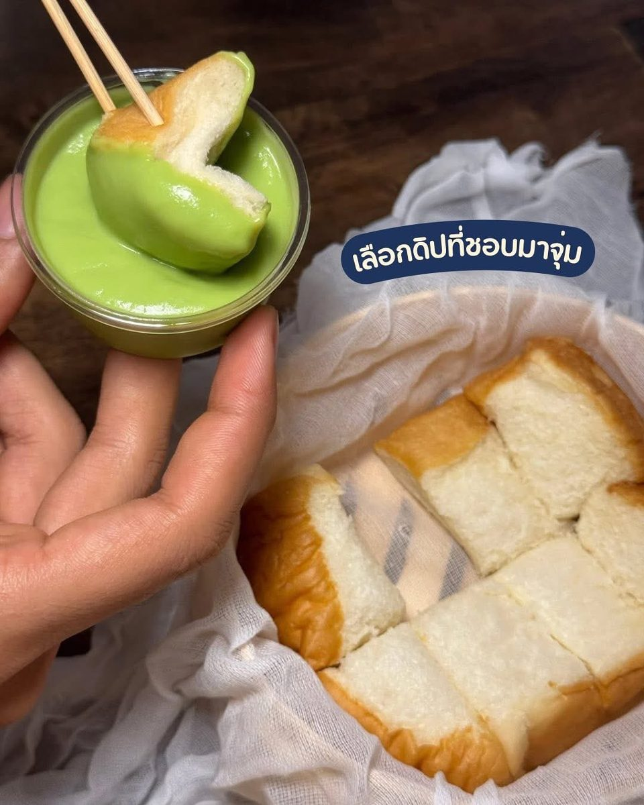
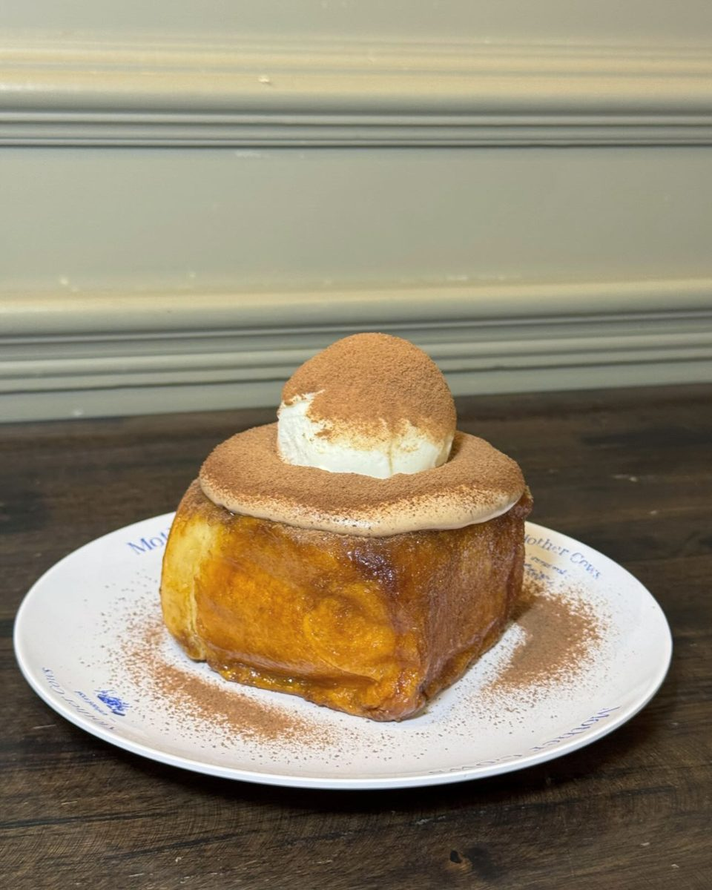
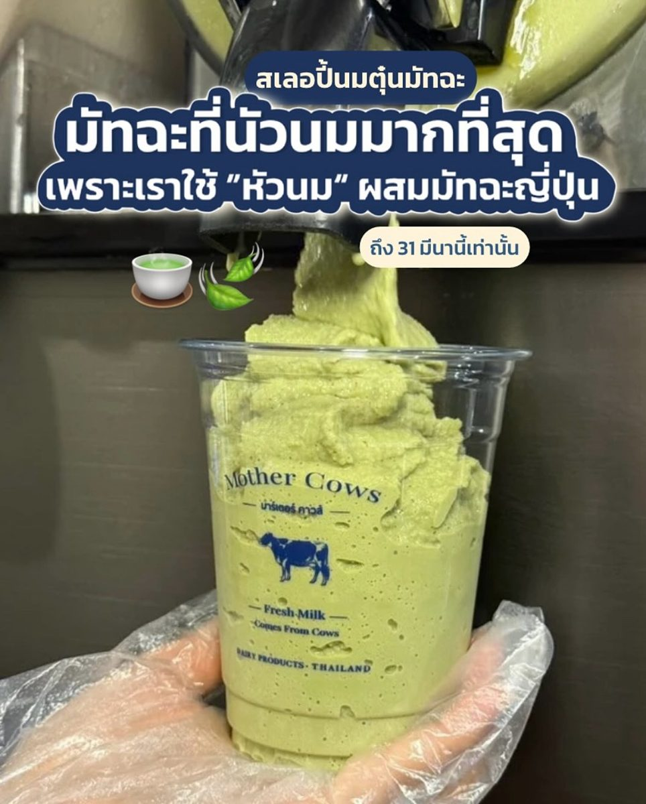
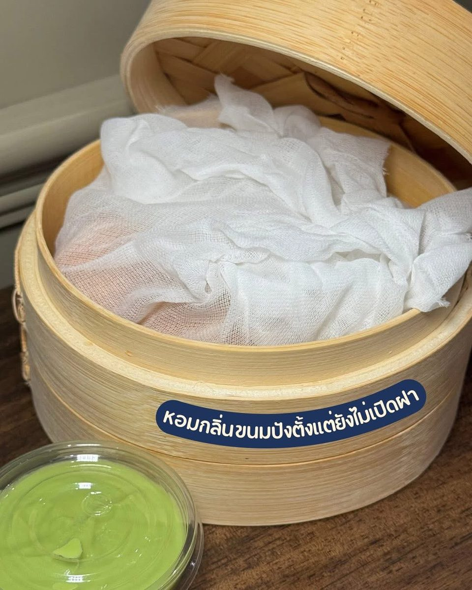
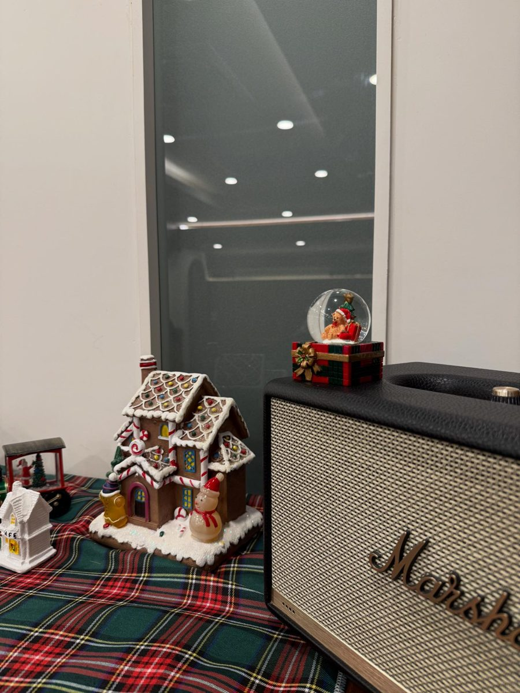
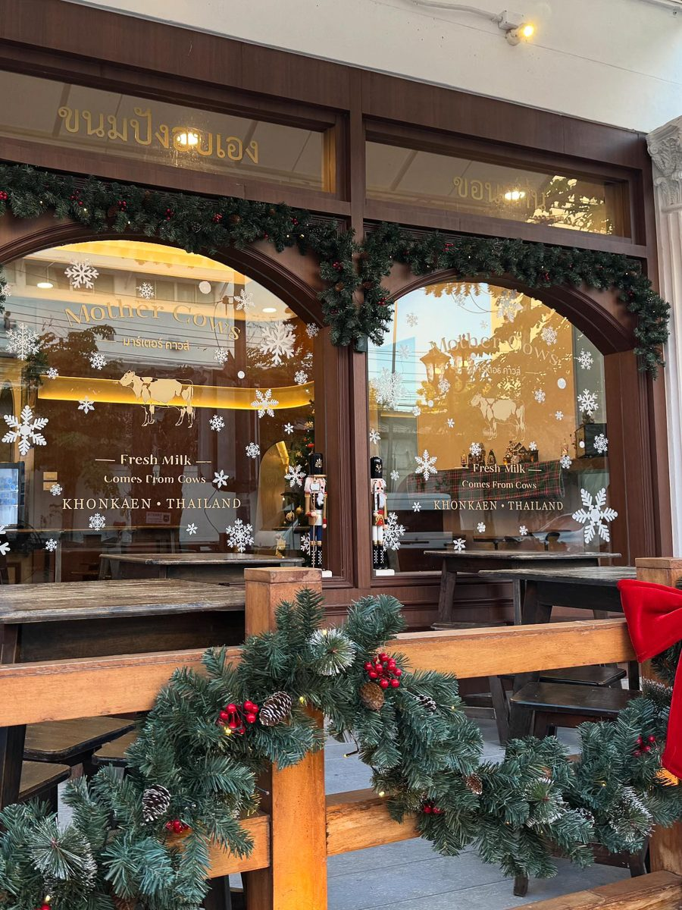
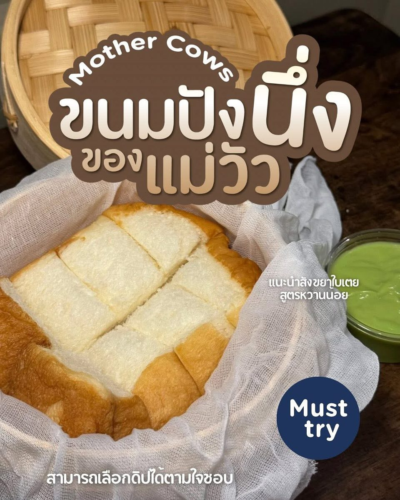
Visit · การเดินทาง